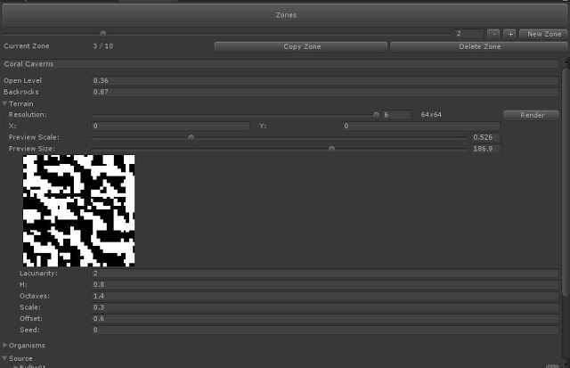
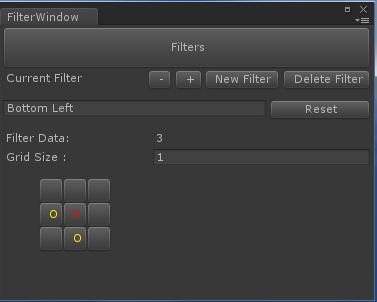
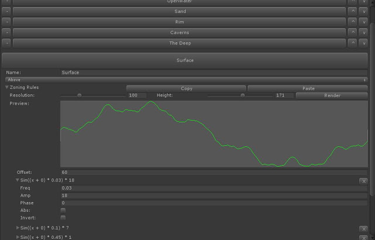

Beck Sebenius


Unity’s built-in serialized data viewer - the default component inspector - is very useful for managing the behaviors of your Unity game. However, there comes a point when a project’s complexity becomes too deep to manage with this simple browser. Data cannot be moved or contain persistent relationships, and it is impossible to run functions on your code from within the editor using the default tools. This is why the Unity Editor scripting interface is incredibly powerful, and learning to use it has been one of the most influential factors in improving my workflow. My work cycle has usually started with prototyping and ended with implementation, but as I grow as a programmer I am starting to realize that these are processes which should be alive throughout the entire project. Editor scripting is a great way to help you keep both of these work-flows functioning together, allowing you to prototype quickly and implement with as few bugs as possible. I follow the philosophy that time spent improving your workflow is time well-spent, and building tools in preparation for a task is essential to carry out complex plans effectively.
A great way to start editor scripting in Unity is by using Custom Inspectors. I mentioned the default component inspector above, and custom inspectors are basically a way to override these for your own methods. Here is a sample of the benefits of a custom inspector:
Example Code
using UnityEngine;
using UnityEditor; //Import Unity's editor functionality to your code
//This next line is the first key to creating a custom inspector:
// Change MyClass to the MonoBehaviour of your choice
[CustomEditor(typeof(MyClass))]
public class MyCustomEditor : Editor {
//Overriding OnInspectorGUI tells Unity to use this function when
// showing the inspector rather than the default one.
public override void OnInspectorGUI ()
{
//If you would like to ADD to the inspector,
// rather than just override it, use this next line:
DrawDefaultInspector();
//The CustomEditor() line above gives us access to the
// "target" variable.
//This variable is "untyped" so it's not wise to use it directly.
// Instead, we will create a new variable and give it the proper Type
// so that we can access it's variables and functions
MyClass myClass = target as MyClass;
//Whether you put this line before or after your code will
// determine where your GUI elements are drawn.
//Custom inspectors are just like OnGUI calls, except
// with the additional functionality of the
// EditorGUILayout class.
// This class works just like GUILayout, but with some
// helpful functions that are geared specifically towards the editor
//Adds a field defining the name of the object
myClass.name = EditorGUILayout.TextField("Name", myClass.name);
//Adds a field defining the position of the object
myClass.transform.position = EditorGUILayout.Vector3Field("Position", myClass.transform.position);
//Adds a field defining the color of the object's renderer
// if it has one
if(myClass.renderer){
myClass.renderer.material.color = EditorGUILayout.ColorField("Color", myClass.renderer.material.color);
}
//Custom editors are also useful for running functions on your code:
if(GUILayout.Button("Move Up 1 Unit")){
myClass.transform.position = myClass.transform.position + Vector3.up;
}
//And what if I want to add the same fields for the other directions?
// The GUI might get cluttered with all these different buttons,
// so lets group them all on one line:
EditorGUILayout.BeginHorizontal();
if(GUILayout.Button("Move Right 1 Unit")){
myClass.transform.position = myClass.transform.position + Vector3.right;
}
if(GUILayout.Button("Move Left 1 Unit")){
myClass.transform.position = myClass.transform.position - Vector3.right;
}
EditorGUILayout.EndHorizontal();
}
}
If you put the above script in a folder called Editor, and change MyClass to the MonoBehaviour of your choice, you can see an example of what the custom editors do.
Some day I might write a more comprehensive tutorial on using Editor scripts. For now, check out this great tutorial: http://catlikecoding.com/unity/tutorials/star/
Here’s are some examples of custom editors in Treasure Turtle.
Perlin Noise Preview 
In the above screenshot is a browser I built which helps me browse the asset import pipeline, generation parameters, and procedural branches of my Zone system. The system helps to generate the procedural level which makes up the game. At the top is a slider for picking zones (of which there are currently 10), and the settings below are foldout menus to categorize the data. The main panel I have open in the screenshot is a preview of the Perlin noise that the zone uses. I use the EditorGUILayout.Foldout function heavily in this menu, and for the EditorGUI.DrawPreviewTexture function for rendering out the preview. In this preview, the Perlin noise is clamped to show how the result will effect gameplay.
This interface was born originally out of the notion that editing arrays of assets is a huge pain in the ass in Unity’s default inspector. It’s Array GUI functionality doesn’t allow you to rearrange the order of items or easily resize the array without stomping data. I found myself spending more time struggling with the interface rather than being creative, and at that point I realized that something must change. Originally this was all built in a Custom Inspector, but eventually I migrated it to an EditorWindow. EditorWindows are much like custom inspectors but live outside of the Inspector panel, allowing for much more freedom.
Toggle Grid

Next up is the filter window, which is used to describe how the system recognizes patterns in the environment. The core of the system has been in the game from the beginning, and without the GUI I would have a hell of a time modifying any of this stuff. There is one important trick that I learned to create this, and that is using the GUILayout Options. GUILayout Options let you dynamically resize your GUILayout boxes without having to figure out the Rectangles yourself. They are sent as optional parameters in your GUILayout calls. For example:
//This will draw a button that is 100 pixels wide
GUILayout.Button("Button", GUILayout.Width(100))
//This will draw a button that is 100 pixels tall
GUILayout.Button("Button", GUILayout.Height(100))
//This will draw a button that looks like an X, handy for when you want to have a delete button for custom data
GUILayout.Button("X", GUILayout.Width(30))
Sin Wave Curve Preview

This final window shows how the ocean floor is determined. My game works on a series of layers. Originally, most of this was hard-coded, but it became impractical to recompile every time I wanted to change something which was inherently visual. This system basically layers a bunch of sin waves at various frequencies on top of each other, creating a varied, non-repeating terrain. It does follow a certain form after a while, but that is intentional - not everything should be random!
Aside from the typical Foldouts and Buttons, I used one final technique which you might find useful: Animation curves! EditorGUILayout.CurveField allows you to show an Animation curve in the Editor GUI, and when combined with GUILayout.Height I got a nice 2-dimentional linear preview window. You could always render this into a texture like my previous example, but this is much less memory intensive and allows you to open up a separate window to look at your curve in greater detail. Baking out my sin waves into an ainmation curve was just a process of baking keyframes from my sin wave result.
So I hope that gives you a good overview of what is possible with the Custom Editor class, how you might use it for your own project. As always you can ask me questions on twitter, email, or IRC if you need some help! Happy toolmaking!